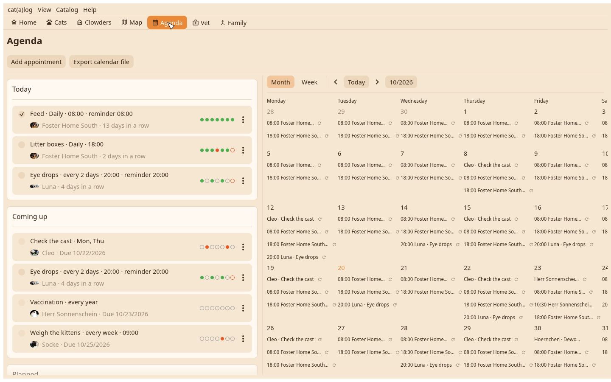
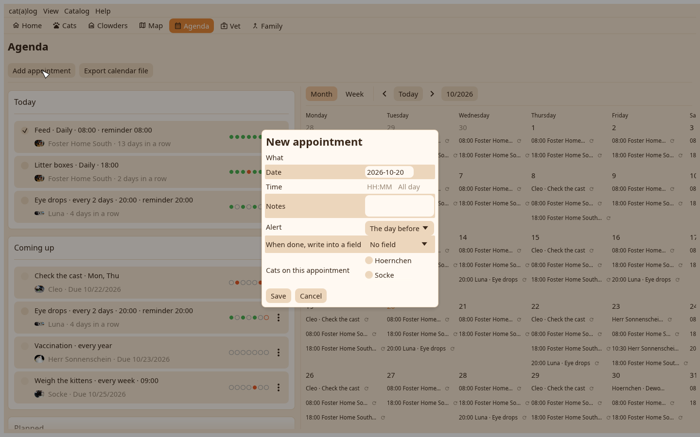

1. The agenda
The list on the left, the calendar on the right. The plus adds an appointment, a reminder or a chore.

2. The chore
For whom, what, how often as radios, a time, a reminder. Save; the chore stands under Today with its box.
